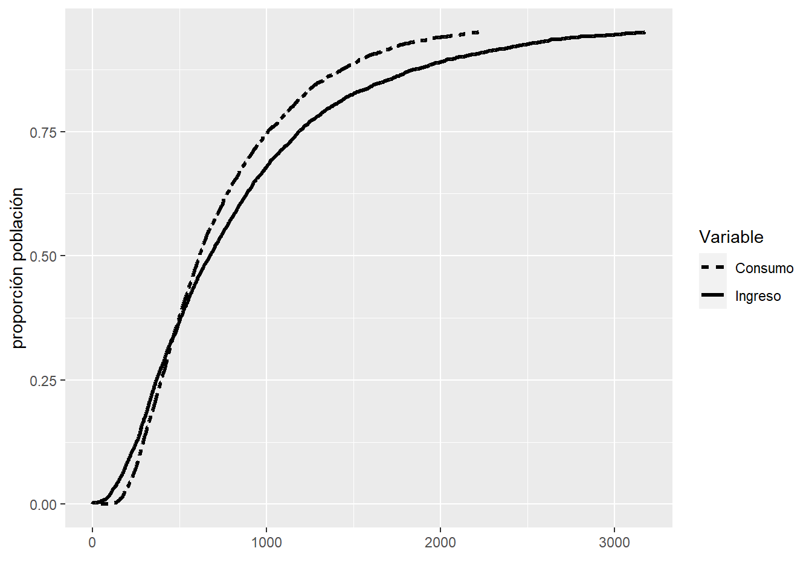

Apéndices del Libro Pobreza y Desigualdad en R
Capítulo 4
Last Update: 28/8/2021
Códigos escritos en base a los apéndices del libro “Pobreza y Desigualdad en América Latina” de Gasparini, Cicowiez y Sosa Escudero. El objeto de este material es reproducir la rutina de códigos para STATA presentada en el libro al lenguaje R. Este material es solo de caracter complementario a las explicaciones y detalles conceptuales que se presentan en el libro de texto y los apéndices
Set Inicial
Cargo las librerias, limpio environment, defino el path y atajo para función paste
library(dplyr)
library(tidyverse) # Data wrangling
library(tidygraph)
library(readxl)
library(ggplot2)
library(foreign)
library(TAM)
rm(list=ls()) #empiezo limpiando todo
"%+%" <- function(x,y) paste(x,y,sep = "") # defino un shorcut parar concat de texto
data_dir <- "C:/Users/HP/Desktop/CEDLAS - UNLP/Apendices en R/Material libro/encuestas-cedlas/Encuestas/" #seteo directorio
2.18 Indicador FGT
###- (PÁG. 249-250)
En este apartado se presenta cómo calcular la familia de indicadores FGT. En primer lugar, se muestra cómo puede computarse el indicador FGT de manera relativamente sencilla. Luego, al igual que con el ratio de quintiles y el cálculo de quintiles, se se introduce una función para el indicador FGT. Como ejemplo, computamos la pobreza de 2.5 dólares para Ecuador en 2006, utilizando microdatos que provienen de la Encuesta de Condiciones de Vida (ENCOVI).
Luego de cargar y limpiar las bases fijamos los valores de pobreza así como el parámtero “alfa” del indicador fgt de aversión a la desigualdad entre los pobres. Luego se computa, para cada individuo pobre, su brecha de pobreza elevada al valor de alfa, que se asigna a una nueva variable que llamamos “each.” La distinción entre individuo pobre y no pobre se operativiza en el comando ifelse: en caso de cumplirse la condición de que el ingreso esté por debajo de la linea de pobreza, se computa la brecha, en caso de que sea falso se otorga un valor de cero. Por último se obtiene el valor de FGT como el promedio ponderado de la brecha en toda la muestra.
#cargo base y elimino observaciones incoherentes o con ingreso missing
ecu06 <- read.dta(data_dir %+% "Ecu/2006/bases/ecu06ecv_cedlas.dta") %>%
filter(cohh==1, !is.na(ipcf))
df <- ecu06
#linea de pobreza
lp=39.74
#parametro alfa indicador fgt
alfa=0
#computar fgt
df <- df %>% mutate(each = ifelse(ipcf<lp, (1 - ipcf/lp)^alfa, 0 ))
fgt = weighted.mean(df$each, df$pondera, na.rm = TRUE)*100
print("fgt = " %+% round(fgt, d=2))## [1] "fgt = 19.02"Otra opción posible es computar los valores directamente como un vector, sin alojarlo como una nueva columna del data frame. Esta opción, desde el punto de vista de la escritura de los códigos, es más eficiente ya que se evita agregar una nueva columna que solo se emplea para el cálculo del indicador. El detalle a considerar es que para poder calcularlo como medida ponderada la cantidad de elementos del vector “each” debe ser exactamente igual la cantidad de observaciones de la columna pondera del dataframe.
#alternativa
each <- ifelse(df$ipcf<lp, (1 - df$ipcf/lp)^alfa, 0 )
fgt = weighted.mean(each, df$pondera, na.rm = TRUE)*100
print("fgt = " %+% round(fgt, d=2))## [1] "fgt = 19.02"
2.19 Computar FGT
###- (pág 250-251)
Como ya vimos en el capitulo 3, las funciones nos permiten replicar un indicador o un cálculo en cualquier base, sobre cualquier variable, imponiendo una condición especifica o ponderando por algún factor de expansión. En este caso además agregamos como argumentos los parámetros asociados al FGT, “alfa”, para la aversión a la desigualdad, y “zeta” para la linea de pobreza. De esta forma podremos replicar y comparar rapidamente el índice para distintos valores que podemos pasarle a estos argumentos. La estructura de la función replica lo visto en las funciones del capítulo 3 hasta la linea 39 donde se computa el FGT con las mismas lineas que empleamos arriba. Adicionalmente se añade la opción de correr la función sin de forma silenciosa, sin imprimir el resultado.
FGT <- function(df, varname, var_pondera=NULL, condicion=NULL, alfa, zeta, quiet=FALSE) {
aux <- as.data.frame(df)
varname_store <- eval(substitute(varname), aux)
aux <- aux %>% arrange(varname_store)
#la condición es un argumento opcional
if(!is.null(substitute(condicion))) {
if(is(try(eval(substitute(condicion)), silent = TRUE ), "try-error"))
stop("ERROR: la condicion debe especificarse como character (entre comillas)")
aux <- aux %>% filter(eval(parse(text=condicion)))
}
#set pondera igual a 1 si no está especificado
if(is.null(substitute(var_pondera))) {
var_pondera_store <- c(rep(1, nrow(aux)))
} else {
var_pondera_store <- eval(substitute(var_pondera), aux)
}
#Cómputo de brecha y valor del indicador
varname_store <- eval(substitute(varname), aux)
aux <- aux %>% mutate(each = ifelse( varname_store < zeta,
( 1 - varname_store/zeta)^alfa,
0 ))
fgt = weighted.mean(aux$each, var_pondera_store, na.rm = TRUE)*100
fgt = round(fgt, digits = 2)
#output
if(substitute(quiet)==TRUE){
a=fgt
} else {
print(paste("FGT(alfa=", alfa, ",Z=", zeta, ") = ", fgt, sep=""))
a=fgt
}
}#No especifica condicion
FGT(df=df, varname=ipcf, var_pondera=pondera, alfa=0, zeta=39.740)## [1] "FGT(alfa=0,Z=39.74) = 19.02"#Especifica condicion
FGT(df=df, varname=ipcf, var_pondera=pondera, condicion="urbano==1", alfa=0, zeta=39.740)## [1] "FGT(alfa=0,Z=39.74) = 11.82"#Especifica incorrectamente la condición
FGT(df=df, varname=ipcf, var_pondera=pondera, condicion=urbano==1, alfa=0, zeta=39.740)## Error in FGT(df = df, varname = ipcf, var_pondera = pondera, condicion = urbano == : ERROR: la condicion debe especificarse como character (entre comillas)#Especifica opcion "quiet"
FGT(df=df, varname=ipcf, var_pondera=pondera, alfa=0, zeta=39.740, quiet=TRUE)
2.20 Pobreza relativa
###- (pág. 251)
La estimación de la pobreza relativa implica, como primer paso, el cálculo de una línea de pobreza relativa. A modo de ejemplo, se computa una línea de pobreza igual al 50% del ingreso mediano de Ecuador. El comando weightedMedian de la libreria matrixStats arroja el valor de la mediana. Luego, el cálculo de la pobreza se realiza empleando la función FGT.
#linea de pobreza del 50% de la mediana del ingreso
lp = matrixStats::weightedMedian(df$ipcf, df$pondera) * 0.50
FGT(df=df, varname=ipcf, var_pondera=pondera, condicion="urbano==1", alfa=0, zeta=lp)## [1] "FGT(alfa=0,Z=47.484118603645) = 16.13"
2.21 Descompoisición regional de la pobreza
###- (pág. 252-253)
El código a continuación realiza una descomposición por regiones de la tasa de incidencia de la pobreza (cuadro 4.7 del libro de texto). Para este caso utilizamos la Encuesta Nacional de Ingresos y Gastos de los Hogares de México para el año 2006 con la línea de pobreza de 2.5 dólares, equivalentes a 608.245 pesos mensuales. Luego de cargar, limpiar e indicar la base de datos con la que se trabajará, se fija la linea de pobreza y se genera, a partir de la función de FGT, la tasa de incidencia para el total del país que se almacena en el objeto “p0.” En la linea siguiente, se toma una unica observación de cada una de las 8 regiones diferentes de México y se las ordena en orden creciente para almacernas como un vector en el objeto “list_rgn.” Sobre este objeto haremos iterar un bucle, para que en cada vuelta los calculos indicados se hagan para cada una de estas regiones.
La primer sentencia dentro de ese bucle, calcula la participación de la región sobre la población y en la siguiente linea se estima su indicador FGT para un valor de alfa=0 y con la linea de pobreza de 2.5 dolares (notar como se instrumenta la condición en la función). Por último la contribución se calcula como el producto entre la participación de cada región en la población total y el cociente entre la tasa de pobreza regional y la tasa de pobreza nacional, se redondea y se indica que se imprima dicho valor.
#cargo y limpio base
mex06 <- read.dta(data_dir %+% "Mex/2006/bases/mex06_cedlas.dta") %>%
filter(cohh==1, !is.na(ipcf))
df <- mex06
lp=608.245
p0 = FGT(df=df, varname=ipcf, var_pondera=pondera, alfa=0, zeta=lp, quiet=TRUE)
list_rgn = sort(unique(df$region))
for (i in list_rgn){
#participación region
shr_rgn = sum(df$pondera[df$region==i]) / sum(df$pondera)
#fgt region
p_r <- FGT(df=df, varname=ipcf, var_pondera=pondera, condicion=paste("region==", i, sep = ""), alfa=0, zeta=lp, quiet=TRUE)
#contribución
contribut = round( shr_rgn*(p_r/p0)*100 , digits = 2 )
print(paste("contribución (%) region", i, "=", contribut))
}## [1] "contribución (%) region 1 = 6.09"
## [1] "contribución (%) region 2 = 9.52"
## [1] "contribución (%) region 3 = 3.07"
## [1] "contribución (%) region 4 = 13.99"
## [1] "contribución (%) region 5 = 24.22"
## [1] "contribución (%) region 6 = 26.12"
## [1] "contribución (%) region 7 = 13.07"
## [1] "contribución (%) region 8 = 3.95"
2.22 Pobreza según consumo e ingreso
###- (pág. 253-254)
El código que sigue puede utilizarse para replicar los resultados sobre pobreza por consumo e ingreso presentados en el cuadro 4.9 del texto para el caso de Nicaragua en 2005. Luego de fijar la tasa de pobreza relevante, el bucle hace que el objeto i tome valores desde 0.5 hasta 1.5 a intervalos de 0.1. Estos valores expanden la linea de pobreza que se utilizaapra calcular el FGT sobre consumo (variable “cpcf”) e ingreso (variable “ipcf”)
nic05 <- read.dta(data_dir %+% "Nic/2005/bases/nic05_cedlas.dta") %>%
filter(coh_oficial==1)
df <- nic05
#linea de pobreza oficial
lp0=576.5028
for (i in seq(0.5,1.5, by=0.1)) {
#linea de pobreza
lp=lp0*i; lp=round(lp, d=2)
#consumo
print(paste(i, "*lp = ", lp, "- Consumo", sep=""))
FGT(df=df, varname=cpcf, var_pondera=pondera, alfa=0, zeta=lp)
#ingreso
print(paste(i, "*lp = ", lp, "- Ingreso", sep=""))
FGT(df=df, varname=ipcf, var_pondera=pondera, alfa=0, zeta=lp)
}## [1] "0.5*lp = 288.25- Consumo"
## [1] "FGT(alfa=0,Z=288.25) = 12.21"
## [1] "0.5*lp = 288.25- Ingreso"
## [1] "FGT(alfa=0,Z=288.25) = 16.59"
## [1] "0.6*lp = 345.9- Consumo"
## [1] "FGT(alfa=0,Z=345.9) = 19.03"
## [1] "0.6*lp = 345.9- Ingreso"
## [1] "FGT(alfa=0,Z=345.9) = 22.91"
## [1] "0.7*lp = 403.55- Consumo"
## [1] "FGT(alfa=0,Z=403.55) = 26.23"
## [1] "0.7*lp = 403.55- Ingreso"
## [1] "FGT(alfa=0,Z=403.55) = 28.51"
## [1] "0.8*lp = 461.2- Consumo"
## [1] "FGT(alfa=0,Z=461.2) = 33.63"
## [1] "0.8*lp = 461.2- Ingreso"
## [1] "FGT(alfa=0,Z=461.2) = 33.77"
## [1] "0.9*lp = 518.85- Consumo"
## [1] "FGT(alfa=0,Z=518.85) = 40.06"
## [1] "0.9*lp = 518.85- Ingreso"
## [1] "FGT(alfa=0,Z=518.85) = 38.76"
## [1] "1*lp = 576.5- Consumo"
## [1] "FGT(alfa=0,Z=576.5) = 46.02"
## [1] "1*lp = 576.5- Ingreso"
## [1] "FGT(alfa=0,Z=576.5) = 43.62"
## [1] "1.1*lp = 634.15- Consumo"
## [1] "FGT(alfa=0,Z=634.15) = 52.18"
## [1] "1.1*lp = 634.15- Ingreso"
## [1] "FGT(alfa=0,Z=634.15) = 47.75"
## [1] "1.2*lp = 691.8- Consumo"
## [1] "FGT(alfa=0,Z=691.8) = 56.67"
## [1] "1.2*lp = 691.8- Ingreso"
## [1] "FGT(alfa=0,Z=691.8) = 51.33"
## [1] "1.3*lp = 749.45- Consumo"
## [1] "FGT(alfa=0,Z=749.45) = 60.71"
## [1] "1.3*lp = 749.45- Ingreso"
## [1] "FGT(alfa=0,Z=749.45) = 54.91"
## [1] "1.4*lp = 807.1- Consumo"
## [1] "FGT(alfa=0,Z=807.1) = 64.76"
## [1] "1.4*lp = 807.1- Ingreso"
## [1] "FGT(alfa=0,Z=807.1) = 58.29"
## [1] "1.5*lp = 864.75- Consumo"
## [1] "FGT(alfa=0,Z=864.75) = 68.21"
## [1] "1.5*lp = 864.75- Ingreso"
## [1] "FGT(alfa=0,Z=864.75) = 61.55"En este caso el código imprime una larga lista de resultados en la consola. Con un cambio menor en el bucle, con las mismas sentencias, podemos generar directamente la tabla a replicar y almacenarla como un dataframe que luego es exportable facilmente a otros formatos para su presentación. Para ello generamos inicialmente 3 vectores vacíos para cada una de las columnas que tendrá la tabla. Utilizamos un contador auxiliar que irá incrementandose de a uno en cadad itereación del bucle, en las cuales iremos guardando los datos que antes se imprimian, ahora como elementos de estos objetos. Así, por ejemplo en la tercer iteración el calculo de FGT se guardará como el tercer elemento del vector consumo y el vector ingreso. Al finalizar creamos un dataframe de 3 columnas a partir de estos 3 vectores, y por ultimo agregamos la cuarta columna calculando la diferencia.
consumo <- c()
ingreso <- c()
linea_pobreza <- c()
j = 1
for (i in seq(0.5,1.5, by=0.1)) {
#linea de pobreza
lp=lp0*i; lp=round(lp, d=2)
linea_pobreza[j] <- paste(i, "*lp", sep="")
#consumo
consumo[j] <- FGT(df=df, varname=cpcf, var_pondera=pondera, alfa=0, zeta=lp, quiet = TRUE)
#ingreso
ingreso[j] <- FGT(df=df, varname=ipcf, var_pondera=pondera, alfa=0, zeta=lp, quiet = TRUE)
j=j+1
}
tabla <- data.frame(linea_pobreza, consumo, ingreso) %>% mutate(diferencia = ingreso - consumo)El código siguiente permite replicar la figura 4.13 del texto, que compara las funciones de distribución del ingreso y el consumo per cápita. Para ello se ordena de forma creciente por las variables de ingreso y luego de consumo, calculando en cada caso el share de población. El “cutoff” se utiliza para indicar qué porcentaje de las observaciones se mostrará en el gráfico.
##FUNCIÓN DE DISTRIBUCIÓN ACUMULADA
#ordenar según ipcf y calcular shrpop
df <- df %>% arrange(ipcf) %>% mutate(shrpop_i = cumsum(pondera)/sum(pondera))
#ordenar según cpcf y calcular shrpop
df <- df %>% arrange(cpcf) %>% mutate(shrpop_c = cumsum(pondera)/sum(pondera))
cutoff=0.95
ggplot(df %>% filter(shrpop_i < cutoff), aes(x=ipcf, y=shrpop_i, linetype="Ingreso"))+
geom_line(size=1.2) +
#como la condición es sobre otra variable tengo que volver a indicar dataframe y aesthetic
geom_line(data = df %>% filter(shrpop_c < cutoff), aes(x=cpcf, y=shrpop_c, linetype="Consumo"), size=1.2) +
scale_linetype_manual(name = "Variable", values=c(Ingreso="solid", Consumo="twodash")) +
labs(y="proporción población", x="")
2.23 Pobreza por edad
###- (pág. 254-255)
El bloque de código siguiente muestra cómo puede graficarse la relación entre pobreza y edad (ver figura 4.15 del texto). Para ello luego de cargar, limpiar la base y definir la linea de pobreza, generamos dos objetos “x” e “y” vacíos donde se almacenará los valores del eje x y el eje y. Estos valores se generaran de forma iterativa mediante un bucle que incremente secuencialmente la edad en 5 años, comenzando en 0 y terminando en 80 años. En cada vuelta estaremos generando el indicador FGT condicionando a las observaciones que caigan dentro de distintos intervalos de edad. Esto equivale a dividir a la población en grupos de edad y para cada uno de ellos calcular el indicador. Al igual que en el código anterior, el contador nos permite almacenar los valores de edad y FGT como elementos de los vectores creados incialmente.
#indico con qué base de hogares voy a trabajar
mex06 <- read.dta(data_dir %+% "Mex/2006/bases/mex06_cedlas.dta") %>%
filter(cohh==1, !is.na(ipcf))
df <- mex06
#linea de pobreza oficial
lp0=608.245
x <- c()
y <- c()
j=1
for (i in seq(0,80,by=5)) {
print(paste("rango = [", i, ",", i+4, "]", sep=""))
fgt_edad = FGT(df=df, varname=ipcf, var_pondera=pondera, condicion=paste("edad>=", i, " & edad<=", (i+4), sep=""),
alfa=0, zeta=lp, quiet = TRUE)
x[j]=i
y[j]=fgt_edad
j=j+1
}## [1] "rango = [0,4]"
## [1] "rango = [5,9]"
## [1] "rango = [10,14]"
## [1] "rango = [15,19]"
## [1] "rango = [20,24]"
## [1] "rango = [25,29]"
## [1] "rango = [30,34]"
## [1] "rango = [35,39]"
## [1] "rango = [40,44]"
## [1] "rango = [45,49]"
## [1] "rango = [50,54]"
## [1] "rango = [55,59]"
## [1] "rango = [60,64]"
## [1] "rango = [65,69]"
## [1] "rango = [70,74]"
## [1] "rango = [75,79]"
## [1] "rango = [80,84]"Las líneas finales grafican los resultados, superponiendo a las estimaciones de pobreza una línea de regresión polinomial de orden dos. .
xst=x^2
aux <- data.frame(x, y, xst)
ggplot(aux, aes(x = x, y = y)) +
geom_point() +
geom_smooth(method=lm, formula = y ~ x + I(x^2) , colour="red")
2.24 Significatividad estadistica
###- (pág. 255-256)
En esta última sección recreamos la técnica del boostrap o reseampleo para obtener errores estándares e intervalos de confianza para las estimaciones del FGT. La versión más simple del bootstrap requiere (i) tomar una muestra de tamaño N (el tamaño muestral) de la muestra original con reemplazo, (ii) computar el índice de pobreza deseado y (iii) repetir el procedimiento B veces, con B grande. Esto es lo que haremos mediante un bucle, fijaremos una cantidad de repeticiones, en las que en cada una estaremos tomando un resampleo de la muestra original de igual tamaño. De esta forma la muestrá irá cambiando en su composición aleatoriamente y por tanto permitirá generar distintos valores del FGT en cada iteración, a partir de una misma base. El comando en R sample_n realiza esta tarea de resampleo, seteando el dataframe, el tamaño de la nueva muestra y la opción con reposición. La expresión nrow(df) indica que la nueva muestra tendrá el mismo tamaño que la base original. Cada valor del indicador se almacena en el objeto “store,” sobre el que posteriormente se calcula el desvío, la media y el tamaño. Estos son inputs necesarios para la formula que estima los intervalos de confianza de nuestras estimaciones. En este caso estimamos un intervalo de confianza del 95%.
per06 <- read.dta(data_dir %+% "Per/2006/bases/per06_cedlas.dta") %>%
filter(cohh==1, !is.na(ipcf))
df <- per06
#genero un resampleo del data frame en cada iteración y para ese data frame obtengo el fgt
store <- c()
rep=50
lp = 128.136
for (i in 1:rep) {
df_sample <- sample_n(df, size=nrow(df), replace=T)
fgt = FGT(df=df_sample, varname=ipcf, var_pondera=pondera, alfa=0, zeta=lp, quiet = TRUE)
store[i] = fgt
}store## [1] 25.25 25.01 25.18 25.30 25.38 25.16 24.99 24.93 25.34 25.15 25.30 25.27
## [13] 25.14 25.20 25.18 25.48 25.06 25.50 25.16 25.52 25.27 25.48 25.41 25.33
## [25] 25.20 25.01 24.96 25.30 24.79 25.06 24.94 25.40 24.89 25.04 24.86 25.22
## [37] 25.13 25.15 25.20 25.13 25.21 25.42 25.17 25.41 25.05 25.07 25.11 25.05
## [49] 25.07 25.31sd=sd(store)
mean=mean(store)
n=length(store)
#con intervalo de confianza del 95%
error <- qt(0.975,df=n-1)*sd/sqrt(n)
left <- mean - error; left## [1] 25.13301right <- mean + error; right## [1] 25.23259A modo de extensión es facil escribir una función que, tomando los resultados alojados en un vector y el intervalo de confianza deseado, nos devuelve directamente el cálculo del intervalo.
#también es posible hacer un función para calcular los intervalos de confianza
ci <- function(vector, intervalo){
sd=sd(vector)
mean=mean(vector)
n= length(vector)
error <- qt((intervalo+1)/2, df=n-1) * sd/sqrt(n)
result <- c("lower" = mean - error, "upper" = mean + error)
return(result)
}ci(store, 0.90)## lower upper
## 25.14126 25.22434ci(store, 0.95)## lower upper
## 25.13301 25.23259ci(store, 0.99)## lower upper
## 25.1164 25.2492